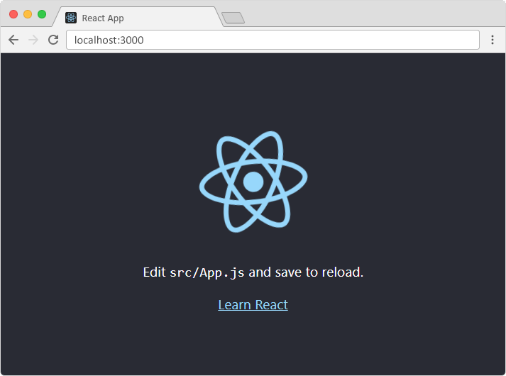

What is React?
- ★ React, sometimes referred to as a frontend JavaScript framework, is a JavaScript library created by Facebook (Meta).
- ★ React is a JavaScript library for building user interfaces, widely used in modern web development.
- ★ React is used to build single-page applications.
- ★ React allows us to create reusable UI components.
- ★ React uses Virtual DOM, JSX, and component-based architecture.
Install Node.js
To use React in production, you need npm which is included with Node.js.What is Node.js?
Node.js is an open-source, cross-platform JavaScript runtime environment that allows developers to run JavaScript outside the browser. It is primarily used for server-side development, making it possible to create fast, scalable, and real-time applications.Before Node.js, JavaScript could only run inside a web browser (like Chrome or Firefox). Node.js changed that by allowing JavaScript to run on a server, enabling backend development with JavaScript.
What is npm (Node Package Manager)?
npm (Node Package Manager) is the default package manager for Node.js. It helps developers install, manage, and share JavaScript libraries and tools easily.Steps to Install Node.js:
- 1. Visit the Node.js website
- ★ Go to https://nodejs.org
- ★ You’ll see the LTS (Long-Term Support) version. LTS is recommended for most users because it’s more stable for development.
- 2. Download the Installer
- ★ Click on the LTS version appropriate for your platform (Windows or macOS).
- ★ This will download an .msi (Windows) or .pkg (macOS) installer.
- 3. Run the Installer
- ★ Windows: Double-click the .msi file, follow the on-screen instructions (accept license, choose install path, etc.).
- ★ macOS: Double-click the .pkg file and follow the installation wizard.
- 4. Verify Installation
- ★ Open Command Prompt (Windows) or Terminal (macOS).
- ★ Run the commands:
node -v npm -v
Create a React App
- 1. Navigate to the folder where you want your project (using cd command).
- 2. Run:
npx create-react-app my-appThis will generate a new folder called my-app with a basic React setup.
| Command Part | Meaning |
|---|---|
npx |
Runs a package without installing it globally. |
create-react-app |
A tool that sets up a new React project with all necessary files. |
my-app |
The name of your new React project (a folder will be created with this name). |
cd my-app
npm startThis launches the app at http://localhost:3000
A new browser window will pop up with your newly created React App!
You should see a welcome screen with a spinning React logo.

React Project Structure
✅ src/ → This is the Core Folder for Your React Code:
- Components (.js or .jsx files) → Reusable UI building blocks
- Styles (.css files) → CSS files for styling your components.
- Logic (.js or .ts files) → JavaScript or TypeScript files for handling data and functionality.
- Assets (images, icons, etc.) → Static resources like images and icons used in the app.
✅ App.js → This is the main component of Your React App
This is the primary file where you write your React code. It serves as the main component of your application, and you can:React Image Import Methods
| Method | When to Use | Example |
|---|---|---|
Import (import logo from './logo.svg') |
When using images inside src/ |
<img src={logo} /> |
Direct Path (src="/logo.svg") |
When using images inside public/ |
<img src="/logo.svg" /> |
| External URL | For online images | <img src="https://example.com/image.jpg" /> |
Check React Version Using npm
Execute this command in the terminal within your project directory:npm list react
React Comment Syntax Summary
| Type | Syntax | Where to Use? |
|---|---|---|
| Single-line JavaScript comment | // This is a comment |
Outside JSX |
| Multi-line JavaScript comment | /* This is a comment */ |
Outside JSX |
| JSX Comment | {/* This is a JSX comment */} |
Inside JSX |